프로그래밍과 문제해결
함수
“절대로, 절대로, 절대 포기하지 마라”
“Never, never, never give up”
— Churchill
재귀
재귀는 함수 자신을 반복해서 호출해서 점진적으로 동일한 문제를 작은 문제로 풀어나가는 기법이다. 모든 재귀 함수는 다음과 유사한 작업 매뉴얼 견본모양을 취한다:
def <함수명>:
if <기본 조건>: # 문제가 해결되었거나 거의 해결되었나?
<기본 사례> # 해결한다.
return
else: # 그렇지 않은 경우 문제가 해결되지 않았다면...
<재귀 사례> # ...문제를 조금 축소한다... 그리고...
<재귀 호출> # ...다시 문제를 풀려고 시도한다.
return파이썬에서, if문과 else문 몸통부문 말미에 return 반환문이 필요하지는 않지만, 무슨 일이 일어나고 있는지 명확히 하려고 지금은 남겨둔다.
지금까지 살펴본 함수와 달리, 재귀 함수는 항상 다른 두 지점에서 반환할 수 있다. 다음에 재귀함수 구성요소가 나와있다:
- 기본 조건: 기본 조건은 문제가 이미 해결되었거나 해법이 매우 쉽다는 점을 일러준다. 따라서, 기본 조건이 참(True)이면, 단순히 문제가 해결되어서 반환하고 종료된다.
- 기본 사례: 기본 조건이 참(True)이면 실행되는 기본 사례다; 많은 경우에 기본 사례는 비어있다; 즉, 수행할 작업이 없어서, 단순히 반환하고 종료된다.
- 재귀 사례: 이 부분이 재귀에 대한 핵심이다: 문제를 동일한 더 작은 버젼 문제로 쪼갠다. 더 작은 문제는 기본 사례에 대한 최초문제에 더 가까워진다.
- 재귀 호출: 함수를 다시 호출해서, 최초 문제에 대한 더 작은 문제를 풀려고 시도한다.
예제: go_to_wall()
wall_in_front() == False; do else |
wall_in_front() == False; do else |
wall_in_front() == False; do else |
wall_in_front() == True; do if |
|---|---|---|---|
| 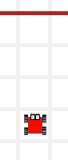 | 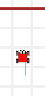 | 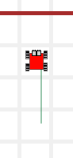 | 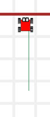 |
작업 매뉴얼 견본모양….
def <함수명>:
if <기본 조건>: # 쉬운 사례
<기본 사례> # if문 몸통부문
return
else: # 재귀 사례
<재귀 사례> # 문제를 축소한다.
<재귀 호출> # ...다시 문제를 풀려고 시도한다.
return작업 매뉴얼 채워 넣은 후…
def go_to_wall():
if wall_in_front(): # 쉬운 사례
pass # if문 몸통부문
return
else: # 재귀 사례
move() # 문제를 축소한다.
go_to_wall() # ...다시 문제를 풀려고 시도한다.
returnpass는 파이썬 키워드로 어떤 작업도 수행하지 않는 명령어다. 카렐 정방에 벽이 있기만 하면, 상기 작성한 함수는 카렐의 초기 위치에 관계없이 동작한다.
예제: touchdown() 터치다운 득점하기
| 출발 준비! | 터치다운 득점 |
|---|---|
| 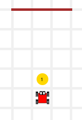 | 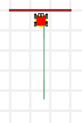 |
def go_to_wall():
if wall_in_front(): # 쉬운 사례
pass # if문 몸통부문
return
else: # 재귀 사례
move() # 문제를 축소한다.
go_to_wall() # ...다시 문제를 풀려고 시도한다.
return
# 메인 프로그램
move()
take()
go_to_wall()
put() 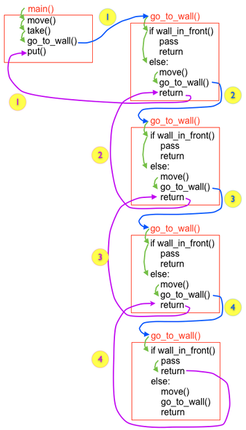
예제: 해법 깔끔히 정리
재귀 개념에 대해 친숙해진 후에, 작업 매뉴얼 견본을 재배치해서 함수를 깔끔히 정리한다. 예를 들어, go_to_wall() 함수를 깔끔히 정리하자:
1. 최초 원본
def go_to_wall():
if wall_in_front():
pass
return
else:
move()
go_to_wall()
return2. if문과 else문 교환 조건 부정(not)을 기억하라.
def go_to_wall():
if not wall_in_front():
move()
go_to_wall()
return
else:
pass
return3. 보수 연산 함수를 사용 만약 가능하면, 기본 조건에 보수 연산 함수를 사용한다.
def go_to_wall():
if front_is_clear():
move()
go_to_wall()
return
else:
pass
return4. return 문을 뽑아낸다.
def go_to_wall():
if front_is_clear():
move()
go_to_wall()
else:
pass
return5. 함수 말미 return문 제거 아무 것도 반환하지 않는 return문은 선택옵션이다; 제거한다.
def go_to_wall():
if front_is_clear():
move()
go_to_wall()
else:
pass6. else문 제거 else문 몸통부문은 아무 작업도 수행하지 않는다; 제거한다.
def go_to_wall():
if front_is_clear():
move()
go_to_wall()위에 나온 모든 go_to_wall() 함수는 재귀함수다. 첫번째 버젼 함수가 매우 명확하다; 기본 사례와 일반 사례가 나타나 있다. 재귀에 친숙해지면, 마지막 버젼 함수도 의미가 분명하다; 기본 사례는 어떤 작업도 수행하지 않고, 단순히 반환하는 역할만 수행하고 있음을 의미한다.
함수 크기가 함수를 변경해야 되는 좋은 사유가 절대로 되지 못한다; 명확성이 지도원칙이다: 명확성을 잃지 않고 함수 크기를 축소할 수 있다면, 함수 크기를 줄여야 된다, 그렇지 않은 경우 줄이면 않된다.
훈련 작업임무
TM1. 남가주(SoCal) 생활 - 와이드 리시버
카렐이 엔드존까지 전력질주 연습을 하고 있다. 앞으로 달려가다, 마주치는 첫번째 공을 집어 들고, 엔드존까지 전력질주 한다. 볼의 위치와 엔드존까지 카렐과 거리는 경기에 따라 변한다; 모든 경우에 동작하는 프로그램을 작성하세요.
메인 프로그램을 다음과 같이 작성해서 시작한다:
# 메인 프로그램
go_to_token() # 공까지 달려가기
take()
go_to_wall() # 엔드존
put() # 터치다운 득점| 경기전: 출발준비! | 경기후: 터치다운 득접! |
|---|---|
| 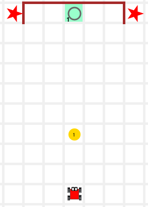 | 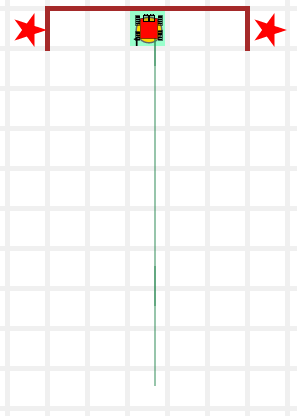 |
해답: 보여주기
이미 go_to_wall() 함수를 살펴봤다; go_to_token() 함수도 유사한데, 벽 대신에 토큰을 찾는 것만 조건에서 차이가 난다:
1. 작업 매뉴얼 견본모양
def <함수명>:
if <기본 조건>:
<기본 사례>
return
else:
<재귀 사례>
<재귀 호출>
return2. 견본이 다음과 같이 변경되고…
def go_to_token():
if token_here:
pass
return
else:
move()
go_to_token()
return3. 그리고… 깔끔히 정리한 후에:
def go_to_token():
if cell_is_empty():
move()
go_to_token()go_to_wall() 함수는 작업임무에 너무 자주 출몰해서 라이브러리에 추가한다.
TM2. 딸기 - 후식
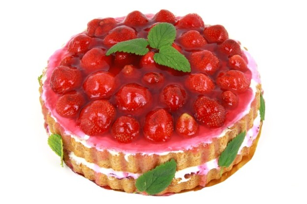
카렐 집에 가려면, 길을 쭉 따라 끝가지 가서, 우회전하고 나서, 집을 찾을 때까지 곧장 걸어가야 한다. 집으로 찾아 가는 길에, 카렐이 만약 딸기를 하나 발견하면, 딸기 하나를 집어 들고 방문하고자 한다: 통로길 각셀에는 0 혹은 1 딸기가 있다. 카렐은 빈 가방을 들고 통로 입구에서 출발한다. 가능하면 딸기 하나를 들고 카렐을 집으로 안내한다.
해답: 보여주기
집에 가는 문제를 쪼개서 3가지 방식으로 해결한다. 먼저, 딸기 혹은 벽을 찾아낼 때까지 이동하고 나서, 통로 끝으로 이동한다. 마지막으로 집에 도착한다. check_for_strawberries() 와 go_to_wall() 함수 명령어는 조합될 수 있지만, 함수를 쪼갬으로써, 라이브러리에 추가할 수 있는 매우 범용 함수를 생성할 수 있다. 예를 들어, go_to_wall(). 다음에 메인 프로그램이 나와 있다:
# 메인 프로그램
go_to_token_or_wall() # 딸기 혹은 벽을 찾아낸다.
safe_take(): # 딸기를 발견하면 집어 담는다.
go_to_wall() # 통로 끝으로 이동한다.
right() # 우회전 한다...
go_home() # 카렐이 집에 도착할 때까지 남쪽으로 이동한다.이제 각 부분별로 해결해보자:
go_to_wall(): 이미 갖고 있는 함수다.go_home():go_to_wall()과 유사하지만, 벽 대신에 집에서 멈추는 차이점이 있다.go_to_token_or_wall():go_to_wall()과 유사하지만, 벽 혹은 토큰에서 멈추는 차이점이 있다.
최종 결과가 다음과 같다:
from my_lib import *
def go_to_token_or_wall():
if token_here() or wall_in_front():
return
else:
move()
go_to_token_or_wall()
def go_home():
if not at_home():
move()
go_home()
# 메인 프로그램
go_to_token_or_wall()
safe_take()
go_to_wall()
right()
go_home()| 출발준비! | 맛난 딸기 |
|---|---|
| 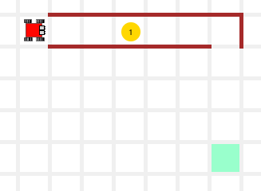 | 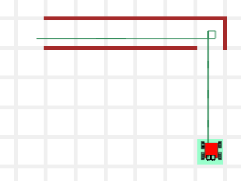 |
3학년 - 남가주(SoCal) 생활 - 벽
화성 “Curiosity” 로버.
JPL 연구소는 예측되지 않는 사건을 조사한 후에 기지로 귀환하는 카렐 기능을 시험하고 있다. 화성에 가장 흥미로운 장소 일부는 크레이터 내부에 위치하고 있다. 또한, 가장 위험한 장소이기도 한데, 이유는 로봇에서 베어링이라도 빠지게 되면 기지로 귀환하는 것은 무척 어렵다. 다음 전개되는 시나리오에서, 카렐은 임의로 지정된 위치에 떨어지게 되는데, 벽으로 둘러싸인 크레이터 남쪽 1 킬로미터 떨어진 곳이다. 카렐은 북쪽을 향해, 벽을 찾을 때까지 진행하고 나면, 크레이터 터진 틈을 찾을 때까지 우측 벽을 끼고 쭉 진행한다. 터진 틈을 빠져 나온 곳이 화성탐사기지다.
“음… 아주 쉽다”고 말하고 싶다. 메인 프로그램은 다음과 같다:
# 메인 프로그램
face_north()
go_to_wall()
find_door()
move()해답: 보여주기
| 방금 착륙! | 우주탐사기지 도착! |
|---|---|
| 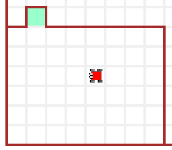 | 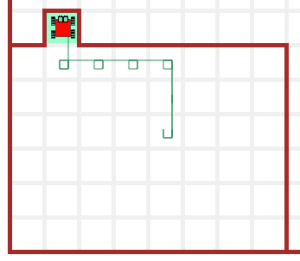 |
4학년 - 딸기 - 호루라기 불기
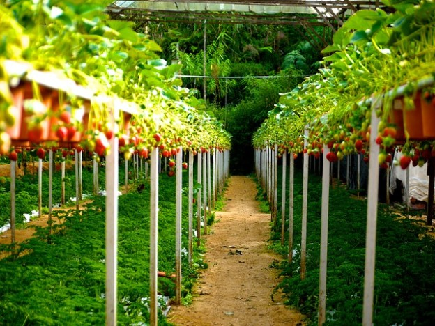
카렐이 담장에서 떨어진 공공장소에 딸기를 심었다. 딸기가 자라서, 점점 관광명소가 되어갔다. 시청에서 카렐에게 담장쪽으로 딸기를 옮겨서, 더 많은 사람들이 편안하게 즐겼으면 했다; 카렐은 시청업무를 돕게 되서 무척이나 기뻤다. 딸기화분에는 임의 갯수 딸기가 심어져 있고, 카렐은 빈 가방을 가지고 작업에 착수한다. 카렐을 도와서 시청공무원분들을 기쁘게 하자. 이 작업을 위해서, 재귀 방식으로 다음 함수를 작성할 필요가 있다:
take_all() # 셀에 담긴 모든 토큰을 집어 든다.
put_all() # 카렐 가방에 있는 모든 토큰을 바닥에 내려 놓는다.| 담장쪽으로 딸기를 옮기려고 시작할 때 | 작업 완료! |
|---|---|
| 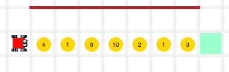 | 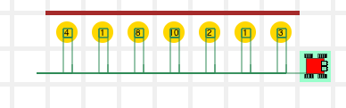 |
5학년 - 파멸의 방 - 잉카 보물

별을 간직하고 있는 방이 있는 페루 마추피추에 도착했다. 별까지 경로는 침입자가 미로에 빠지게 똑똑하게 부호화했다. 하지만, 코드를 갖고 있어서, 인내심만 조금 가지면, 별이 있는 곳에 도달할 가능성이 있다.
전략이 믿을 수 없게 단순하다: 마주치는 모든 벽에서, 토큰을 발견하게 되면 좌회전하고, 그렇지 않은 경우 우회전한다.
이것이 전부? 그게 …. 넵… 잘못된 곳으로 인도할 수 있는 가짜 토큰도 엄청 많다. 하지만, (지금까지 학습해서) 코드를 알고 있다면, 별까지 도달할 수 있어야 된다.
별을 집어 올리는데, 다음을 사용한다:
take( "star" )해답: 보여주기
| 시작해요! | 해냈어요! |
|---|---|
| 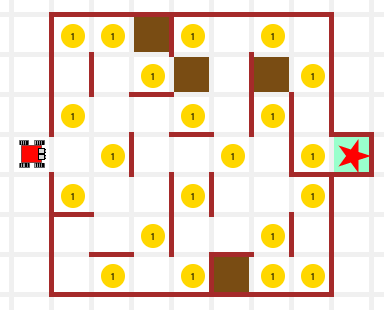 | 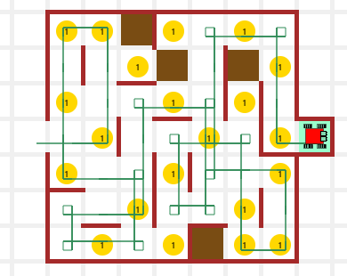 |
6학년: 남가주(SoCal) 생활 - 밀밭 미로
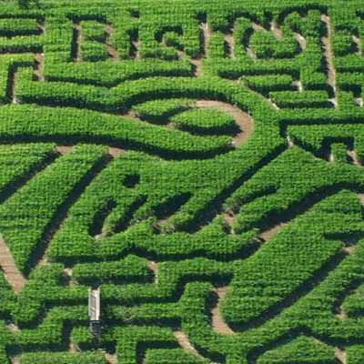 캘리보니아 밀밭 미로 Bishop’s Pumpkin Patch
할로윈 기간 가장 인기 있는 명소는 밀밭 미로에 호박을 숨길 수 있는 농장이다. 카렐은 호박파이 광팬으로, 올해는 유일하게 가장 커다란 호박을 얻기로 결심했다. 카렐을 도와서 호박을 얻어서 집으로 안전하게 귀가하도록 도와주세요.
해답: 보여주기
| 호박… 호박… | 멋져요! =-) |
|---|---|
| 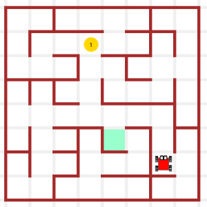 | 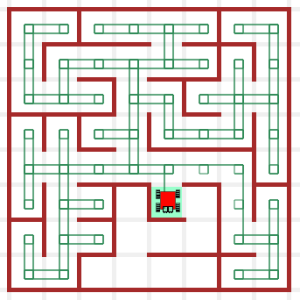 |
힌트:
문제를 작은 조각으로 쪼갠다. 먼저 호박을 찾아 모아야 한다; 그리고 나서 집으로 귀가한다.
호박을 모으려면, 프로그램을 다시 쪼개야 한다. 먼저, 카렐이 호박위에 서 있는지 판단해야 한다; 만약 호박위에 서 있지 않다면, 벽을 따라 쭉 이동한다.
오른쪽 벽을 따라 쭉 이동하려면, 오른쪽으로 돌아서, 그곳에 벽이 있는지 확인해야만 된다. 벽이 있든 없던, 다음 이동 방향을 찾아, 해당 방향으로 쭉 이동한다.